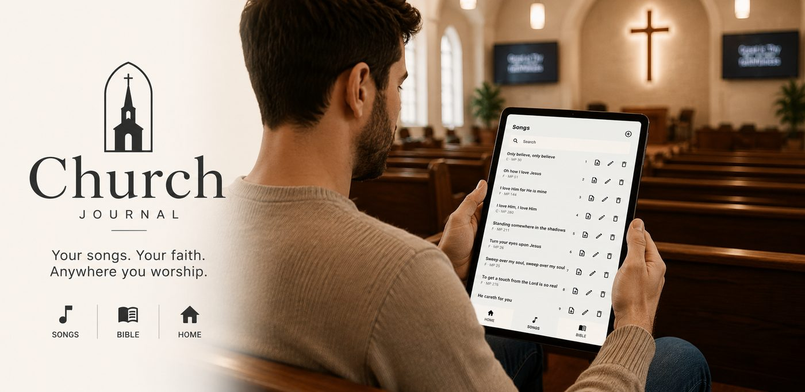

Worship
Log every song sung in the service. Build AM and PM set lists with titles and keys from your imported library.
In The Sunshine
A private, offline journal for worship set lists, sermon notes, and scriptures — organized by date and service, with a built-in Bible and an optional downloadable song library you import into the app.

Built for Sunday
Church Journal mirrors how you actually experience worship — morning or evening, songs sung, scriptures opened, and notes taken.
Log every song sung in the service. Build AM and PM set lists with titles and keys from your imported library.
Record sermon title, speaker, and references. Tap any verse to open the Bible reader.
Multi-page sermon notes with stylus support and swipe navigation between pages.
Search your imported hymn list offline. Read and search the full Bible without an internet connection.
Capture service moments in a photo gallery. Export and restore your journal with CSV backup.
See the app
Soft pastels, clear typography, and tabs for Home, Songs, Bible, Photos, and Settings.

Track every song sung, with keys at a glance.

Sermon title, speaker, and scripture references.

Multi-page notes with handwriting and text.

Import a 541-song library JSON, or build your own list in the app.

Full offline Bible with reference search and verse highlighting.
Song library
Church Journal does not bundle lyrics in the app. Download the optional JSON library below, then in the app open Settings → Song library → Replace song library (JSON). Only import lyrics your church is licensed or permitted to use.
Your journal stays on your device. No account required. Optional morning and evening reminders to keep you in the Word.
hello@churchjournal.app